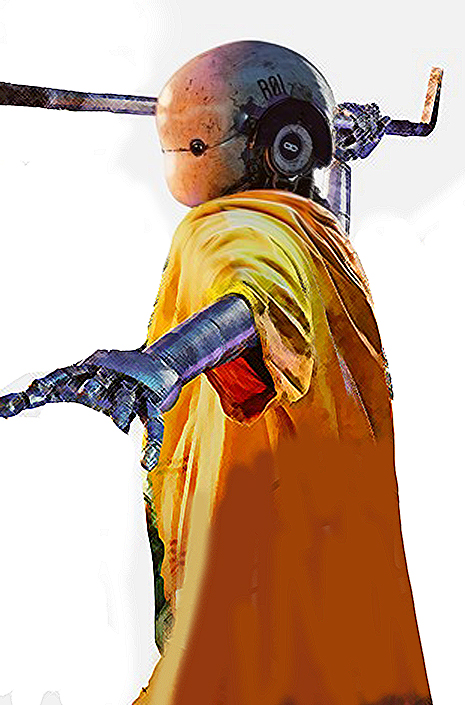

태호 |
|
| "한마디로, 돈이 되는 꼬마란 말이야." | |
| 배우 : 송중기 | |
|
원래는 UTS 지니어스 프로그램의 첫 번째 입양자로써 유일하게 설리반의 품에 안겨 들어왔으며, 이후 소년병으로 길러져 20살의 나이에 천재적인 우주선 조종사이자 UTS 기동대장으로 활동했다. 그러나 지금은 자격을 박탈당하고 현재 딸의 시체를 찾고 있다. |
|
장선장 |
|
| "안 돼, 정의롭지가 못해." | |
| 배우 : 김태리 | |
|
승리호의 선장. 본명은 장현숙. 로봇인 업동이를 제외하고, 승리호의 선원들 중 가장 어리다. 그렇지만 파란만장한 인생을 보냈고 사회의 쓴맛도 잘 알며, 여유만만하고 냉철한 성격으로 분위기에 휩쓸리지 않고 언제나 중심을 잘 잡는다. 두뇌 회전도 굉장히 좋다. |
|
타이거 박 |
|
| "그래핀 티타늄, 이거 앞에서는 만민이 평등하지. 너도 한방, 나도 한방." | |
| 배우 : 진선규 | |
|
승리호의 기관장이다. 사실 그의 정체는 4년 전까지 지구에서 유명했던 마약 밀매 조직의 두목이었고, 이미 체포당한 적이 있으며 더군다나 사형이 언도되었기에 지구에 내려가면 바로 죽을 운명이라고 한다. 그럼에도 심성이 곱고 착하다. |
|
|  | 업동이 |
| "난 입 벌린 적이 없는데~?" | |
| 배우 : 유해진 (목소리) | |
|
승리호의 선원. 군사용으로 설계된 인공지능 로봇이다. 승리호 내에서 하는 역할은 작살잡이다. 로봇이라 산소 호흡이 필요 없고 무중력 상태에서도 신체 능력이 우월하기 때문에, 우주선 바깥에서 쓰레기에 작살을 던져 맞혀서 끌어오는 일을 한다. 의외로 여자다. |